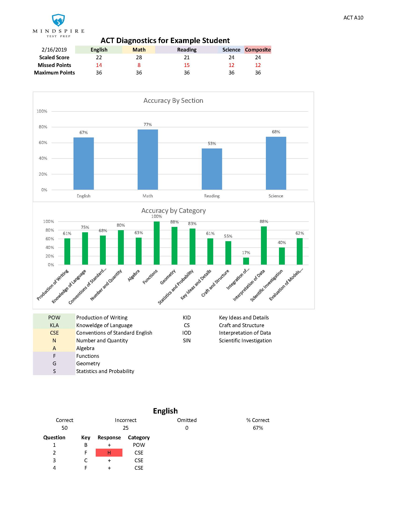
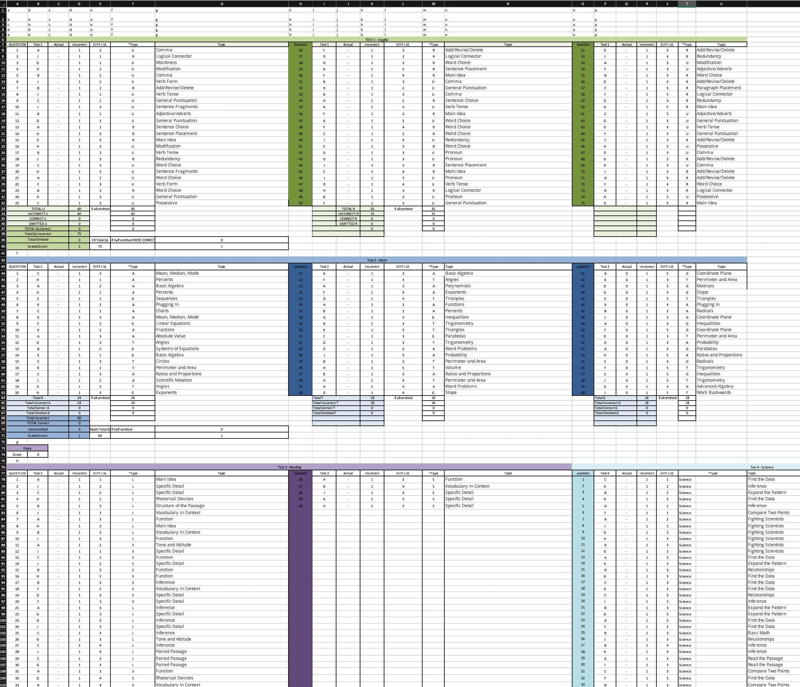
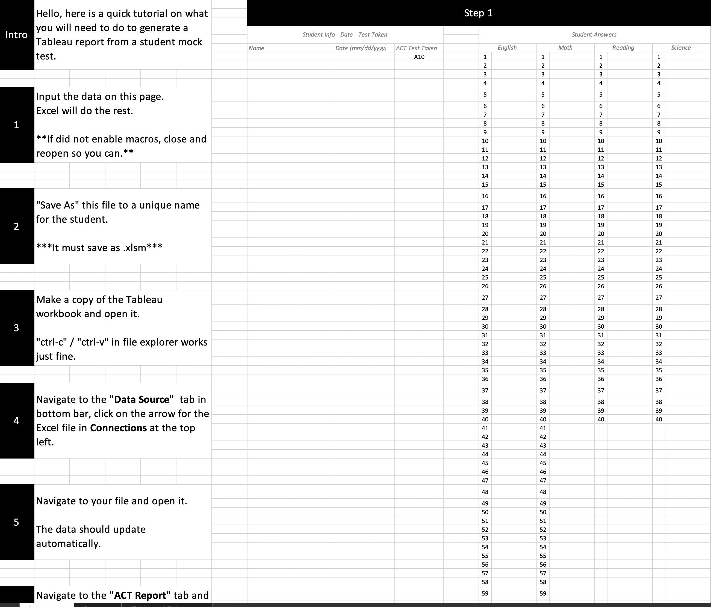
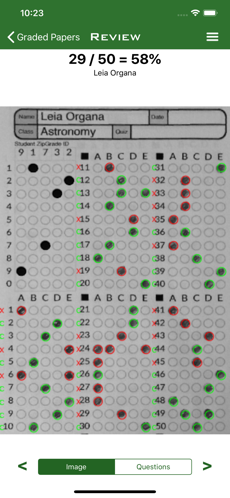
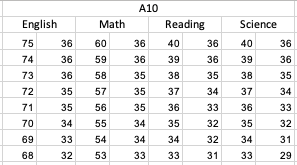
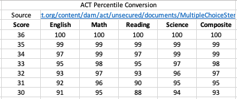
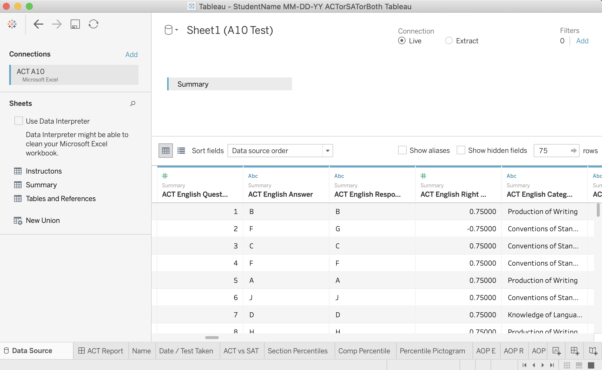
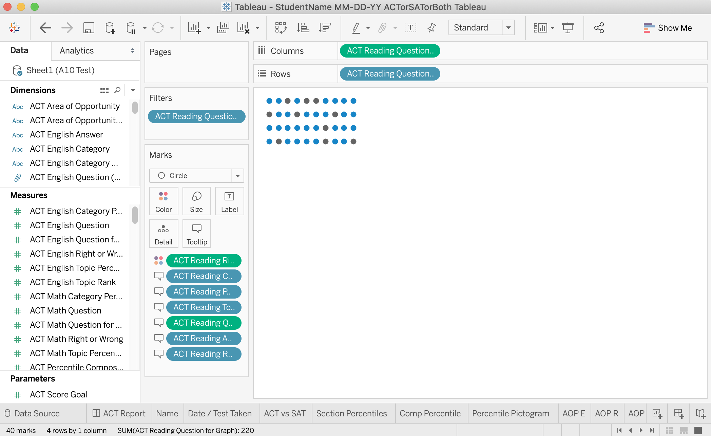

THE ACT, UNDERSTOOD
Mindspire is a tutoring service that trains high school students for the ACT. With personalized lesson plans and hard work, Mindspire students meet or exceed their target scores 98% of the time.
Students prepare for the ACT by taking practice tests and reviewing the results. However, the detailed score report Mindspire generated was not being used. Hierarchy issues and unactionable metrics prevented deep insights by tutors and most students avoided the report entirely.
Mindspire's ACT score report needed a refresh.
Pre-refresh ACT score report (page 1 of 5)
THE CHALLENGE
DESIGN A MORE USEFUL REPORT
The objective was simple: redesign the ACT score report to encourage student and tutor engagement. We wanted to pack it with insights to further student growth.
Our project goals were:
- Improve interpretability of report
- Provide actionable insights
- Summarize in single page dashboard
- Optimize report generation process
My Role
Product Designer -- I led all aspects of the design including research, implementation, and user feedback.
Data Analyst -- I was responsible for reworking the data pipeline and report generation steps.
I worked alongside the founder and CEO of Mindspire and sought continual feedback from students and tutors.
{kind=link}
DISCOVERY
TALKING TO USERS
To evaluate the pitfalls of the ACT score report, I relied on the insights from interviews with 8 students and 4 tutors. This qualitative information gave me a deeper understanding of the problems they were having. As a tutor myself, I could compare my personal experience with what other users were feeling.
CONFUSING HIERARCHY IN LENGTHY REPORT
Students were frustrated trying to navigate the report. They felt it took too long to find their score and understand where they can improve.
DISJOINTED CATEGORY INFORMATION
The Key and Accuracy by Category results were not useful to tutors on the first page. The relevant subjects were on later pages, so tutors had to shift back and forth to draw conclusions.
NEGATIVE CONNOTATIONS WITH COLOR
The heavy use of red dominated the report. Students found this discouraging and distracting. Even if they only missed a few questions, the visually commanding red instilled a more pessimistic feeling than the actual outcome.

FEELS LIKE EXCEL
Students and tutors were put off by the spreadsheet feel of the report. This gave students less trust in Mindspire to deliver great results.
THE OTHER HALF OF THE EQUATION
WORKING WITH DATA
The design of the score report is just one half of the equation. Mindspire office workers must record student scores and generate the report.
Interviews with two Mindspire staff members uncovered several pain points in the report generation process.

Data entry page. All responses entered manually.
THE DATA ISSUES
Manual Entry -- Each answer much be typed into the data sheet. This was time consuming, averaging 5-7 minutes per test.
Error Laden -- Because each test score sheet required its own Excel file, errors were often copied and cumbersome to remedy.
Unintuitive -- Generating the report in Excel regularly caused tricky-to-fix formatting issues.
FIXING THE HIERARCHY
CONCISE YET INSIGHTFUL
Both students and tutors were not using the score report because it was challenging to navigate. The hierarchy was confusing and students were often left with more questions than answers.
It was uncovered that:
- The sparse layout made navigation difficult and tedious.
- The final score was small and difficult to find quickly.
- It was impossible to compare multiple sections at once.
To solve these issues I proposed a few key objectives:
- Distill report to one page.
- Present student score clearly and as a main focus.
- Enable comparison across subjects and sections.
TAKING IT DOWN TO ONE PAGE
In order to distill the report from five pages to one, I determined the most important metrics for both students and tutors. These served at the building blocks for the visualization.
Score summary -- Both students and tutors must be able to quickly understand the student's score. The ACT score is comprised of four subjects that average into a composite score out of 36. All four subjects and the composite score must be visible.
Inividual question responses -- The ACT's four subjects contain 40-75 multiple choice questions. It must be easy to identify patterns by seeing all answer responses.
Question categories -- ACT questions can be summaried by several problem types. It is necessary for students and tutors to understand what types of problems are being missed. The dashboard must summarize category performance for all subjects.
Percentile -- In order to understand how a student's score compares to peers, composite and subject percentiles must be reported.
Areas of opportunity -- Working on difficult types problems can raise a score higher and faster. The report must specify question types that a student needs to focus on.
Success prediction -- Mindspire has years of experience guiding students through either the ACT or SAT. The report must indicate for which test a student is best fit.
MORE THAN A FEELING
EMPOWERING THE STUDENTS
The ACT plays a major role in where a student may attend college. That comes with a substantial amount of pressure. Mindspire tutors work to mitigate anxiety in all aspects surrounding the test. I found two ways that the report could positively motivate students and reduce anxiety.
Positive color choice -- Marking incorrect answers in red can shift the mentality from positive to negative. The report must avoid red and use colors that motivate the student.
Professional dashboard -- Students need confidence to improve their scores, and they must believe their tutor can help get them there. The report must echo the expertise and professionalism that Mindspire tutors embody.
NEEDS BECOME DESIGNS
PROTOTYPING THE VISUAL COMPONENTS
I began prototyping the individual components of the visualization which were then combined into a larger dashboard. It was important to consider the technical feasibility of the visualizations, as they needed to be created programmatically and without issue.
Score Summary
The ACT is scored out of 36, which not all students may know. For this reason, the student needed to be informed of the relative percentage of each score. I designed the score summaries to include this context.
Students and tutors were split between designs #4 and #5. They felt that both were more natural to understand and the score itself was more visible.
Individual Question Responses
When looking at question-level responses, tutors expressed that it is most important to obeserve trends in accuracy. They wanted this to be easy to understand at a glance.

Because design #1 was more concise, it was chosen to be developed. It addresses questions in much less space than design #2 and is easier to quickly see patterns than design #3.
Question Categories
Strong and weak areas for a student must be easily visualized. Tutors were less concerned with percent level accuracy and more interested in seeing relative performance among subject categories.
Each design received positive feedback from both tutors and students. All were chosen to be developed for the four subjects.
Percentile
Tutors wanted students to be able to visualize the percentile of their performance. Not all students understood percentiles, so the portrayal needed to be highly visual.
Design #1 was most easily interpreted by students. They were able to visualize what a percentage meant.
Color Scheme
To avoid negative colors, I stayed away from red or similar shades. Using Adobe Color, I built a color scheme that incorporates the blue from Mindspire's logo.

The blue and green shades do not depict negativity. Wrong answers were chosen to be shown in grey in order to celebrate correct answers.
CONNECTING THE DATA
DEVELOPING THE VISUALIZATION
Using Excel, I created a data framework to build the visualization. To fix the manual data entry backlog, I connected the workbook to ZipGrade. It allows users to take a picture of a bubble sheet and automatically import responses. Clear instructions serve as a reminder or beginner's guide.
 FIRST: Excel workbook w/guide | SECOND: Example of ZipGrade App scoring a bubble sheet
ORGANIZING THE DATA
Based on metrics provided by the ACT and inhouse Mindspire data, I organized the data according to the following table:
| General Info | ACT Summary Stats | Subjects in Detail |
|---|---|---|
| Student Name | Scores | Answer |
| Test Date | Percentiles | Response |
| Test Code | Areas of Opportunity | Category |
| ACT vs SAT | Topic | |
| Passage |
To convert a student's raw score (percent correct) into a scaled score (out of 36), I imported a scale from each test. These scaled scores could then be expressed as percentiles using the imported percentile conversion table.
 FIRST: Test scoring scale | SECOND: Percentile scale
CREATING THE DASHBOARD
I used Tableau, which is data visualization software, to build the dashboard. It allows users to import Excel files and reliably create visualizations with little effort once the template is made.
{kind=link}
Importing data into Tableau
I made visualizations by performing operations on columns of data. Each chart or data point on the dashboard required a similar sheet of varying complexity.
{kind=link}
Creating a Tableau data visualization
AN IN-DEPTH LOOK
THE FINAL DESIGN
I overhauled Mindspire's ACT score report to create an informative and interactive experience. A concise and positive dashboard encourages improvement while clear visualizations enable more insights.
Launched design

DISCOVER TRENDS
8 unique and powerful visualizations make it possible to see trends in test taking. They follow a Mindspire-logo inspired color scheme which avoids negative colors.
PREDICT SUCCESS
I utilized a predictive algorithm to determine if a student is more suited for the ACT or SAT. The visualization uses Mindspire's logo as the pointer.
REPORT WITH DEPTH
Students and tutors can digest more data with less distraction through tooltips. These display additional information when an element is hovered or selected.
WHAT HAPPENED
CONCLUSIONS AND REFLECTION
Taking a user-centric approach to the design of Mindspire's ACT score report benefitted students, tutors, and the business. Students went over results more attentively because of intuitive and engaging visualizations. Lessons saw new depth as tutors could better understand the nuances of their students' results. Mindspire even reduced their report generation cost by 50% from time saved.
Working with my peers in a different context led to many exciting insights. I not only learned new tutoring methods, but also designed an effective tool for student growth. I look forward to seeing how much further Mindspire's tutors and students can take the next design.